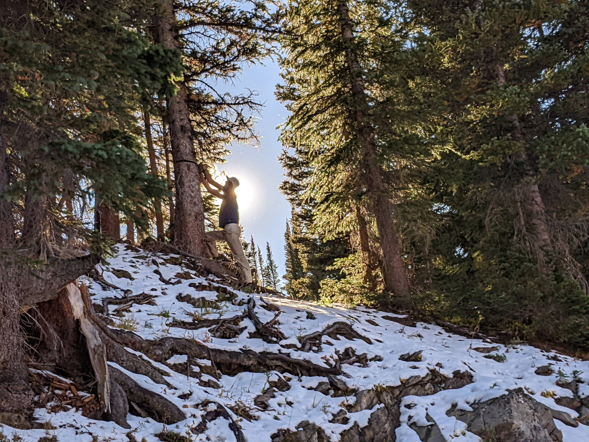

The Problem: Inaccurate Streamflow Predictions
Snow provides over 60% of water supplies in the Western United States, and in general, spring snow measurements provide a good prediction of summer streamflow. However, in some years, these streamflow predictions are not accurate, and water managers struggle to efficiently allocate water resources. In many studies, warming temperatures correspond to less observed streamflow per unit precipitation input. However, key elements, including basin heterogeneity, gauge undercatch, groundwater flow, and water storage, are often not represented in models or predictions, and physical hydrologic models diverge widely in their hydrologic sensitivity to warming. We will combine distributed observations and modeling to test the following hypotheses.
- Fall rainstorms recharge soil moisture and groundwater, increasing subsurface connectivity and the efficiency of winter snowpack to generate streamflow.
- More uniformly-distributed snow cover leads to greater subsurface water connectivity and more efficient water delivery to the stream. More variable snow cover, either through a greater elevational gradient or increased patchiness, leads to less effective recharge and greater evaporative losses. Only modeling that represents subsurface water transfer from snow-covered to snow-free grid cells will represent these effects.
- Warming temperatures and increased rain relative to snow over recent decades have changed snow distributions in ways that decrease runoff efficiency, increasing the frequency of snow free areas at lower elevations fed by snow at higher elevations, which increases basin total evapotranspiration.
Our Study
Our questions require both long timeseries and detailed, distributed observations. We propose to first investigate our hypotheses over the well-instrumented East River (Colorado) and Tuolumne River (California) basins. These long-term observations are augmented with detailed distributed surface flux observations obtained during the 2021-23 multi-agency atmospheric campaigns of SAIL, SPLASH, and SOS in the East River basin. We will use models to establish essential process representations and to directly test hypotheses. We will then test for the essential minimum observations and process representations to expand to larger scales.
Our study will directly inform modelers and water managers of the key processes that must be represented to accurately predict runoff originating from seasonal snow in mountain watersheds, leading to improved understanding, prediction, and planning at seasonal and longer timescales.